COMMODORE
VILÁG
1. szám · C64/128, C16/Plus 4, Amiga
Az eredeti lap hangulata változatlanul megmarad, miközben a cikkek szövege kereshető, kijelölhető és telefonon is kényelmesen olvasható.
Olvasás az első oldaltól →A lapszám oldalai
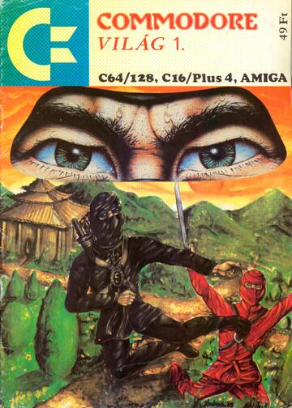
Címlap Címlap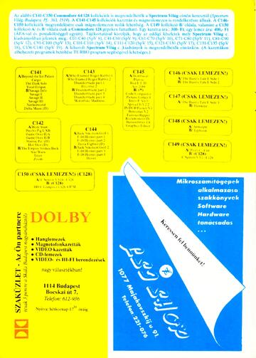
Belső borító Programkollekciók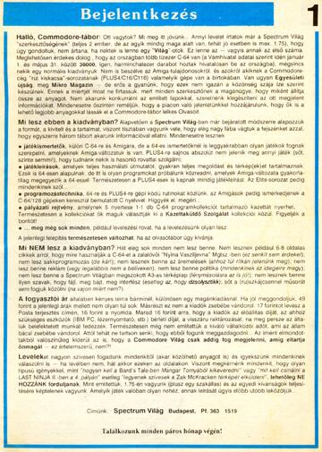
1. oldal Bejelentkezés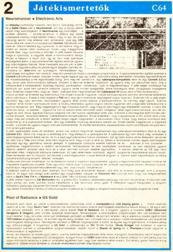
2. oldal Játékismertetők – Neuromancer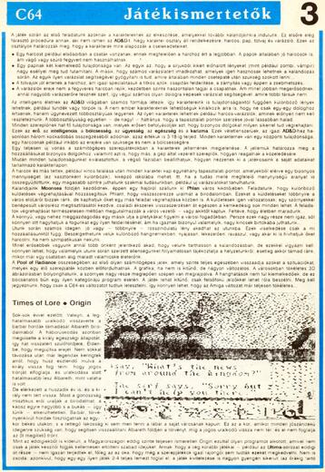
3. oldal Játékismertetők – The Last Ninja és Times of Lore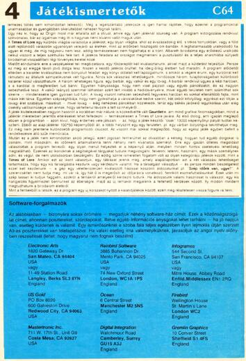
4. oldal Játékismertetők és software-forgalmazók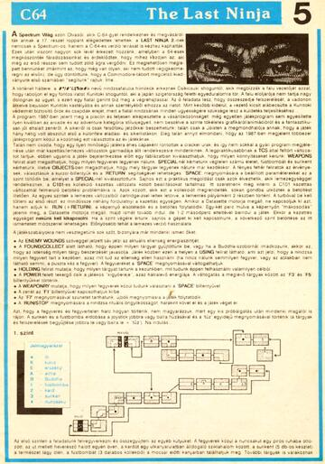
5. oldal The Last Ninja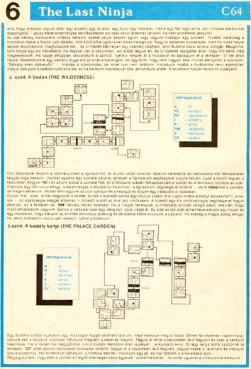
6. oldal The Last Ninja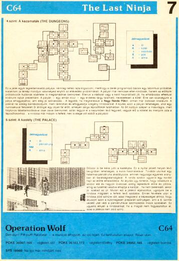
7. oldal The Last Ninja és Operation Wolf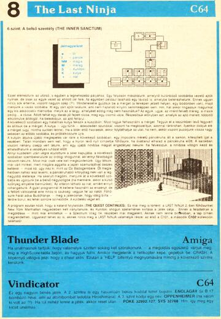
8. oldal The Last Ninja, Thunder Blade és Vindicator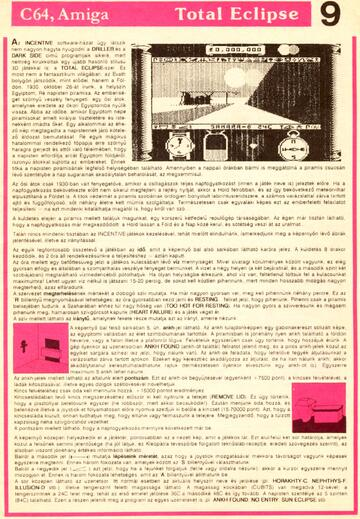
9. oldal Total Eclipse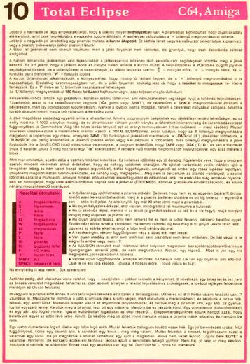
10. oldal Total Eclipse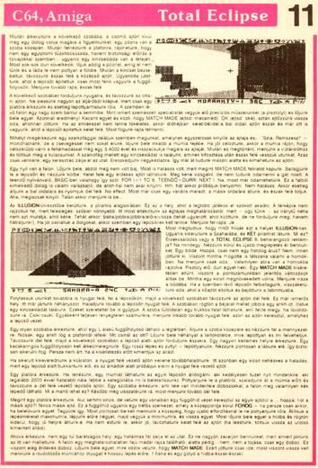
11. oldal Total Eclipse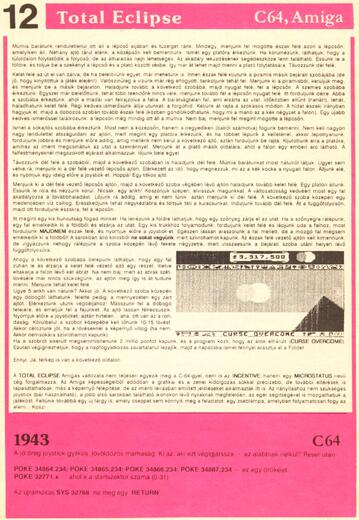
12. oldal Total Eclipse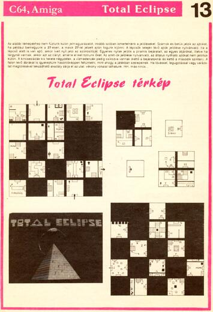
13. oldal Total Eclipse térkép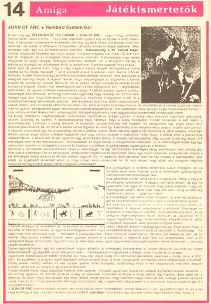
14. oldal Játékismertetők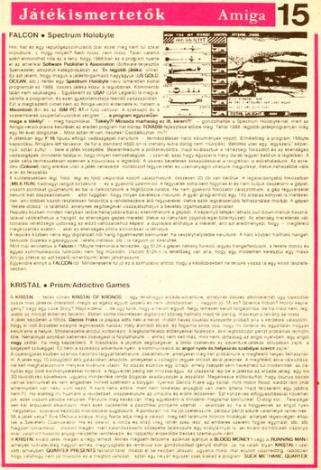
15. oldal Játékismertetők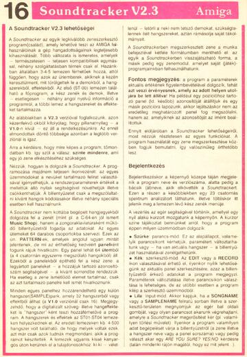
16. oldal Soundtracker V2.3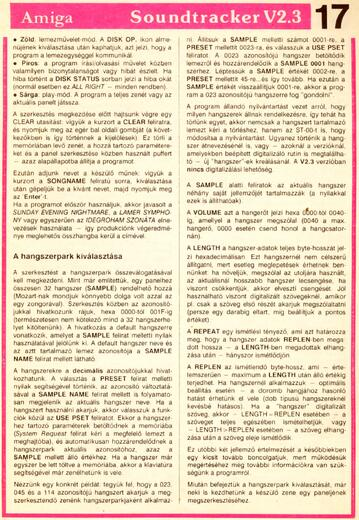
17. oldal Soundtracker V2.3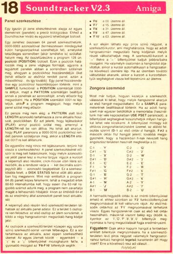
18. oldal Soundtracker V2.3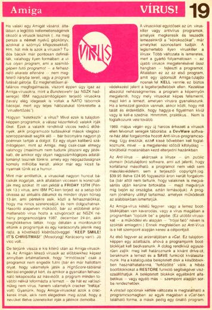
19. oldal Vírus!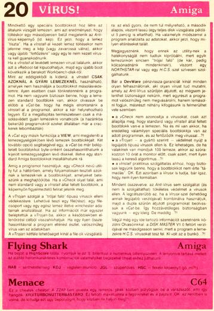
20. oldal Vírus!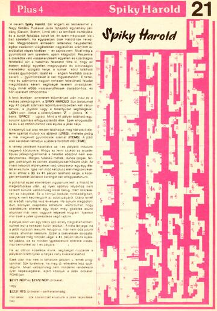
21. oldal Spiky Harold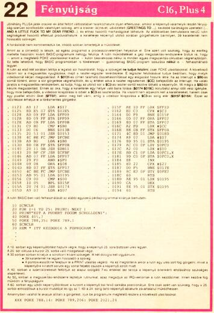
22. oldal Fényújság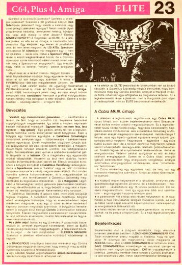
23. oldal ELITE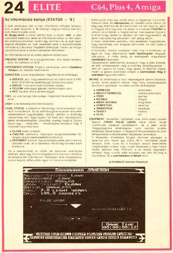
24. oldal ELITE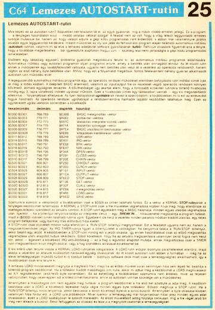
25. oldal Lemezes AUTOSTART-rutin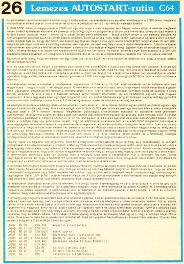
26. oldal Lemezes AUTOSTART-rutin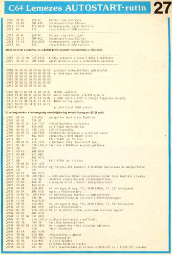
27. oldal Lemezes AUTOSTART-rutin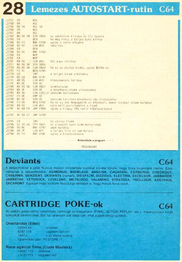
28. oldal Lemezes AUTOSTART-rutin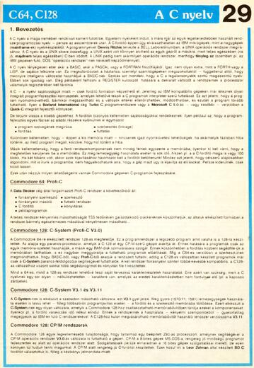
29. oldal A C nyelv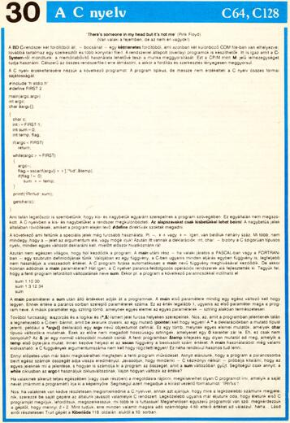
30. oldal A C nyelv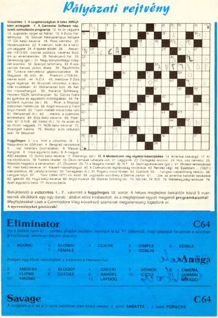
31. oldal Pályázati rejtvény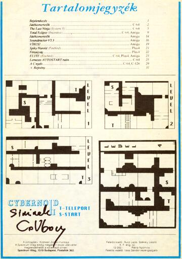
32. oldal Tartalomjegyzék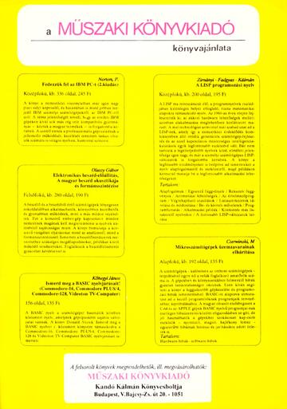
Belső hátlap Műszaki Könyvkiadó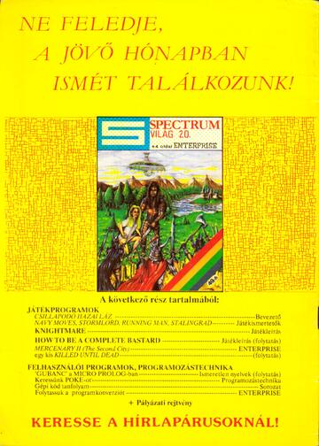
Hátlap A jövő hónapban ismét találkozunk!A pilot célja: kipróbálni a teljes sorozathoz használható formát. Minden oldal önálló HTML-fájl, saját beágyazott CSS-sel; külső stíluslap és JavaScript nélkül működik.